American Craftsman
Time Period: Late 19th – early 20th century
Concept: Emphasizes handcrafted materials and simplicity, reacting against industrial mass production.
Features: Exposed beams, built-in furniture, overhanging eaves, and wood or stone detailing.
Examples:
 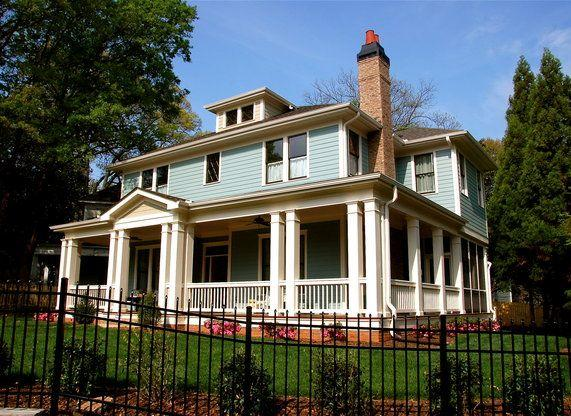
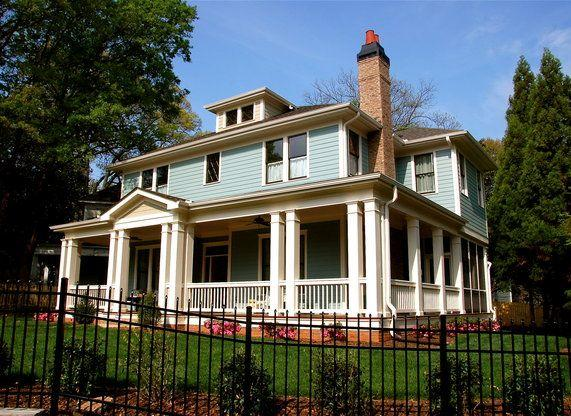
Bauhaus
Time Period: 1919–1933
Concept: "Form follows function"—prioritizing efficiency, minimalism, and mass production.
Features: Flat roofs, glass and steel facades, geometric forms, and open interiors.
Palladian
Time Period: 16th–18th century
Concept: Inspired by ancient Roman and Greek architecture, emphasizing symmetry and harmony.
Features: Classical columns, porticos, domes, and grand entrances.
Deconstructivism
Time Period: Late 20th century – present
Concept: Challenges traditional architecture by embracing irregularity and unpredictability.
Features: Fragmented shapes, tilted walls, asymmetrical facades, and distorted forms.
Georgian
Time Period: 1714–1830
Concept: Based on Renaissance principles, emphasizing balance, proportion, and symmetry.
Features: Brick facades, symmetrical layouts, and sash windows.
Romanesque
Time Period: 10th–12th century
Concept: A fortress-like style focused on strength, durability, and religious significance.
Features: Thick stone walls, rounded arches, barrel vaults, and small windows.
Greek Revival
Time Period: Early–mid 19th century
Concept: Inspired by ancient Greek democracy and culture, symbolizing civic pride.
Features: Tall columns, triangular pediments, and white marble facades.
American Foursquare
Time Period: Early 20th century (1890s–1930s)
Concept: A response to Victorian excess, featuring practical layouts and simplified exteriors.
Features: Boxy shape, hipped roof, large front porch, and four-room floor plans on each story.
Examples: 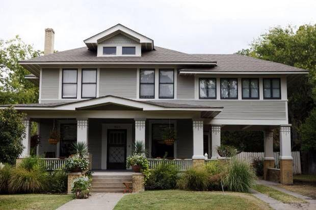 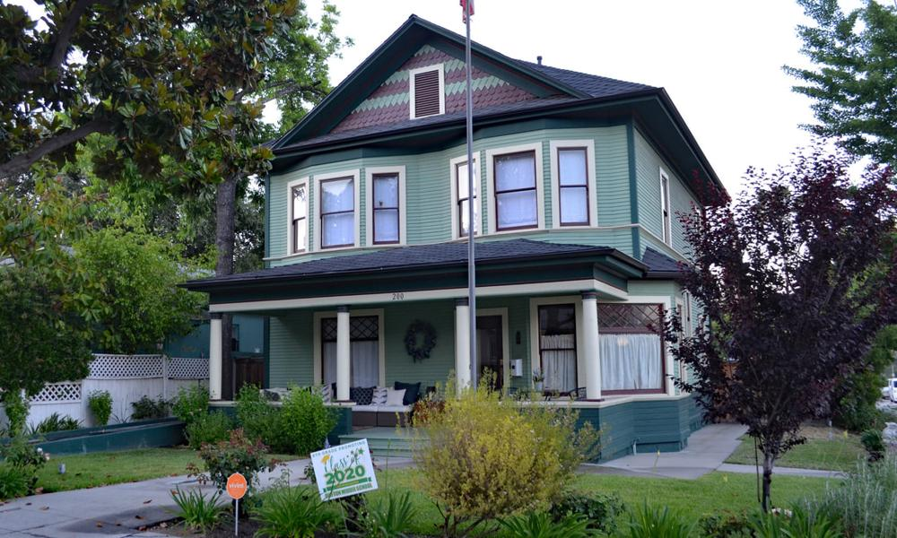 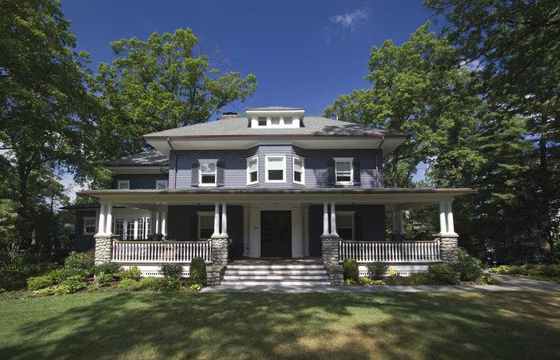Byzantine
Time Period: 4th–15th century (peaking in the 6th century)
Concept: Merged Roman engineering with Greek and Middle Eastern influences, primarily for Christian empire building.
Features: Domes on pendentives, lavish mosaics, round arches, and centralized church plans.
Postmodern
Time Period: Mid-20th century – present (1970s onward)
Concept: Rejects modernist austerity by mixing historical references, ornamentation, and playful design.
Features: Eclectic forms, bright colors, irony, and a blend of traditional and contemporary elements.
Art Nouveau
Time Period: Late 19th – early 20th century (c. 1890–1910)
Concept: Embraced organic, flowing lines, rejecting strict historicism and emphasizing nature-inspired motifs.
Features: Whiplash curves, floral patterns, asymmetrical shapes, and extensive use of iron and glass.
Examples: 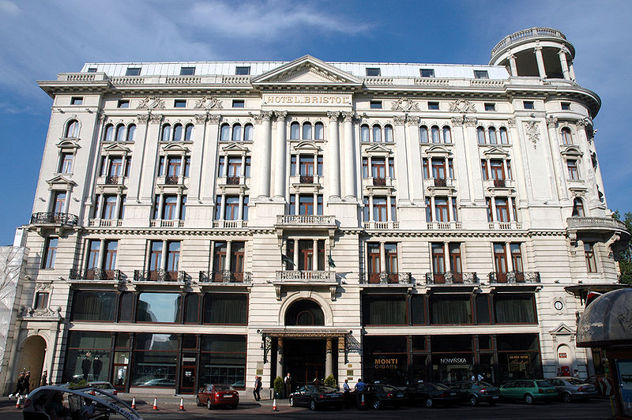
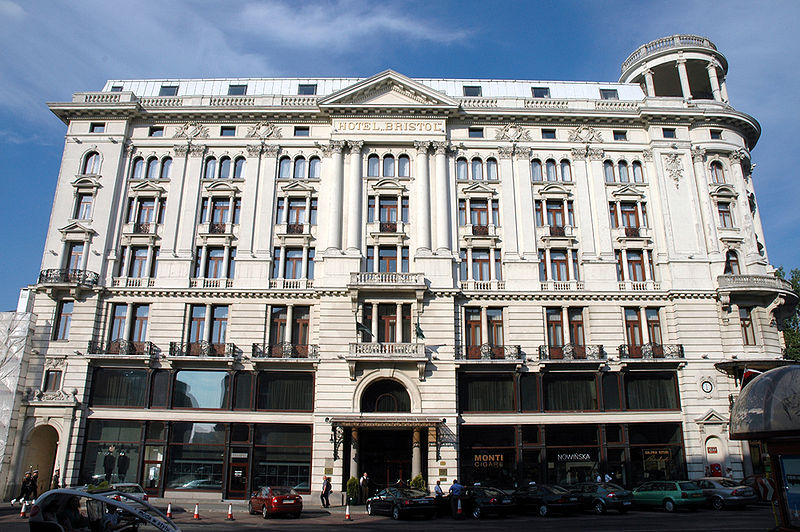

Art Deco
Time Period: 1920s–1930s
Concept: Celebrated modernity, technology, and luxury through streamlined forms and bold ornamentation.
Features: Geometric patterns, zigzags, sunbursts, symmetry, and stylized motifs.
Examples: 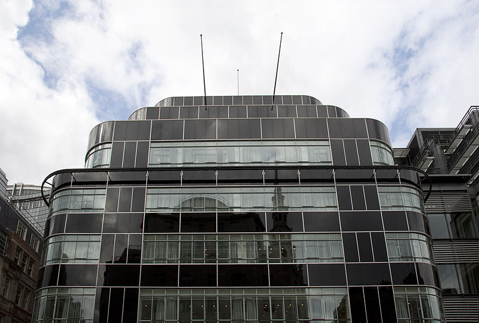
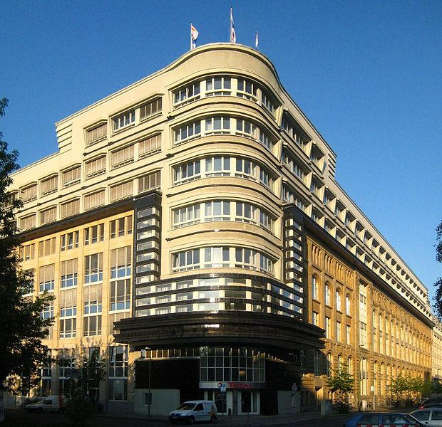
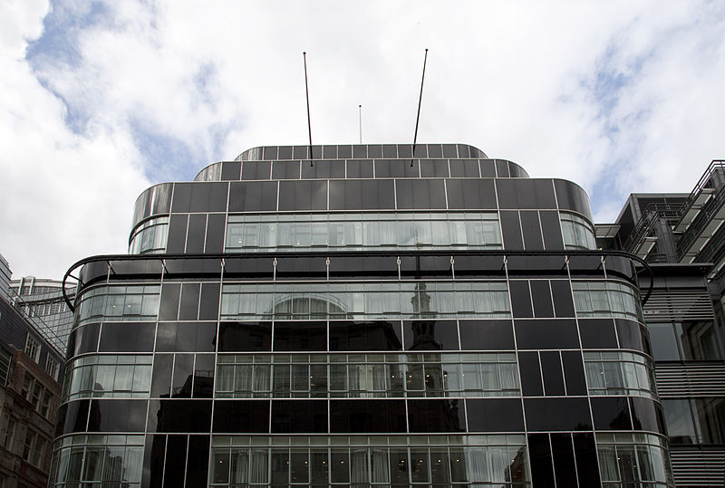
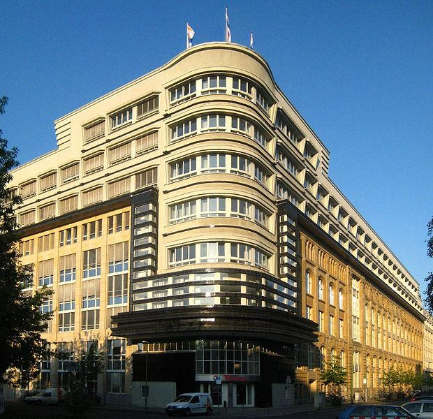
Russian Revival
Time Period: Mid-19th – early 20th century
Concept: Romantic nationalism that revived medieval Russian forms—often for churches or civic buildings.
Features: Onion domes, tented roofs, kokoshnik arches, decorative brick patterns, and colorful exteriors.
Edwardian
Time Period: 1901–1910 (extended to 1914 by some historians)
Concept: Lighter, simpler style than Victorian, reflecting a shift toward more relaxed social norms.
Features: Subdued ornamentation, pastel color schemes, larger windows, and partial classical detailing.
Achaemenid
Time Period: 550–330 BC
Concept: Monumental Persian style designed for royal grandeur and imperial authority (e.g., Persepolis).
Features: Hypostyle halls, tall columns with bull or lion capitals, relief sculptures, and vast terraces.
Examples: 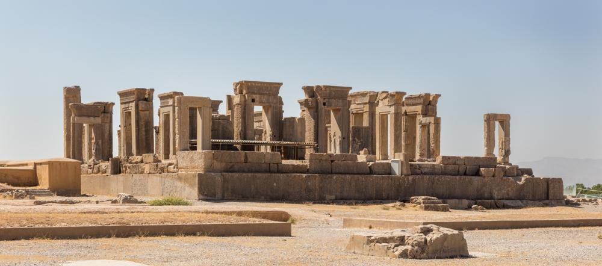 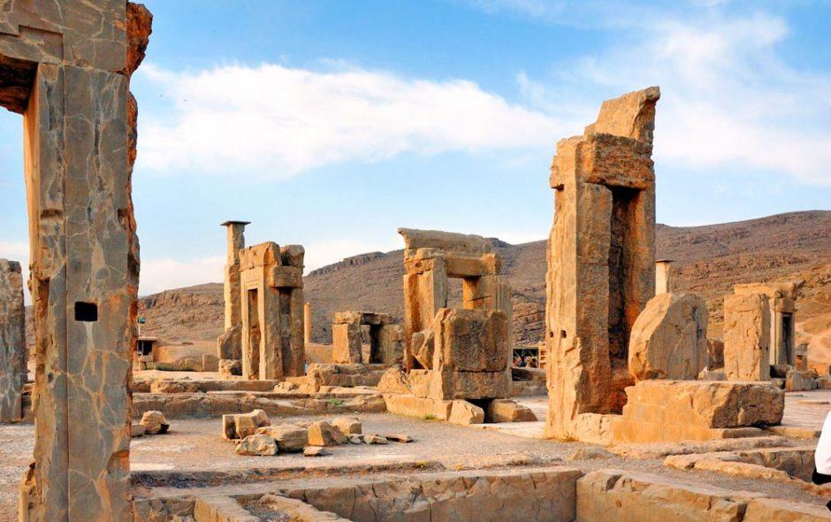 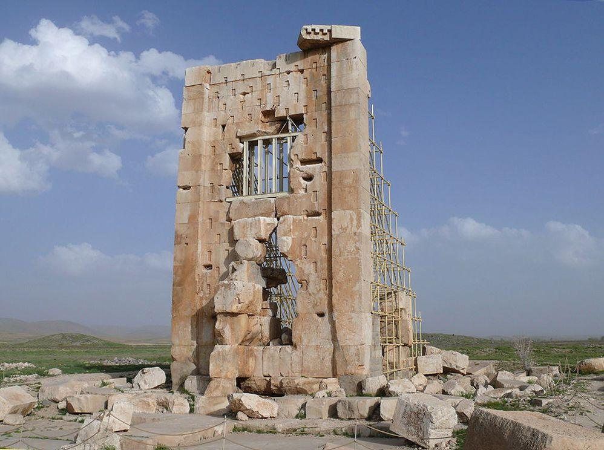Novelty
Time Period: Mid-20th century – present
Concept: Known as "duck" or "programmatic" architecture, often shaped like objects for attention or humor.
Features: Buildings mimicking objects (giant coffee pot, hotdog stand), bold signage, playful or whimsical designs.
Baroque
Time Period: Early 17th – mid-18th century
Concept: Dramatic and richly ornamented style conveying power and religious intensity, often tied to the Counter-Reformation.
Features: Curving lines, elaborate scrolls, domes, dynamic facades, and bold contrasts of light and shadow.
Colonial
Time Period: 16th–19th century (varies by region)
Concept: European powers adapting their homeland designs to new climates and resources in the colonies.
Features: Symmetrical facades, central doors, multi-pane windows, simple massing, references to “mother country” styles.
Ancient Egyptian
Time Period: c. 3100 BC – 30 BC
Concept: Monumental stone architecture aimed at eternity, reflecting religious beliefs in afterlife and divinity.
Features: Massive pyramids, thick sloping walls, columns with lotus/papyrus capitals, relief carvings, hieroglyphics.
Examples: 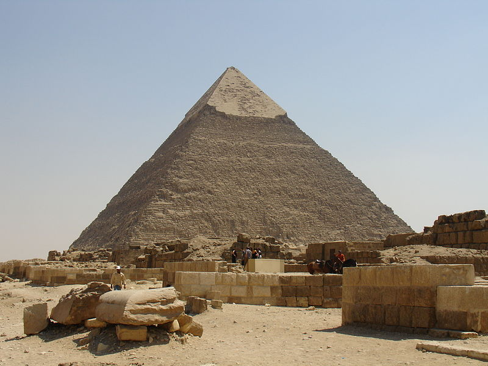 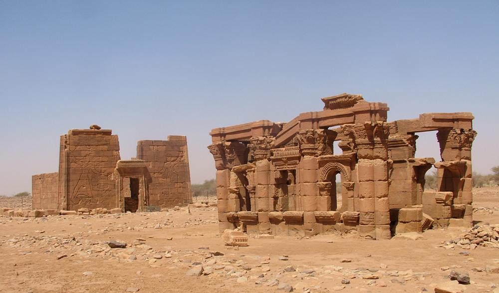
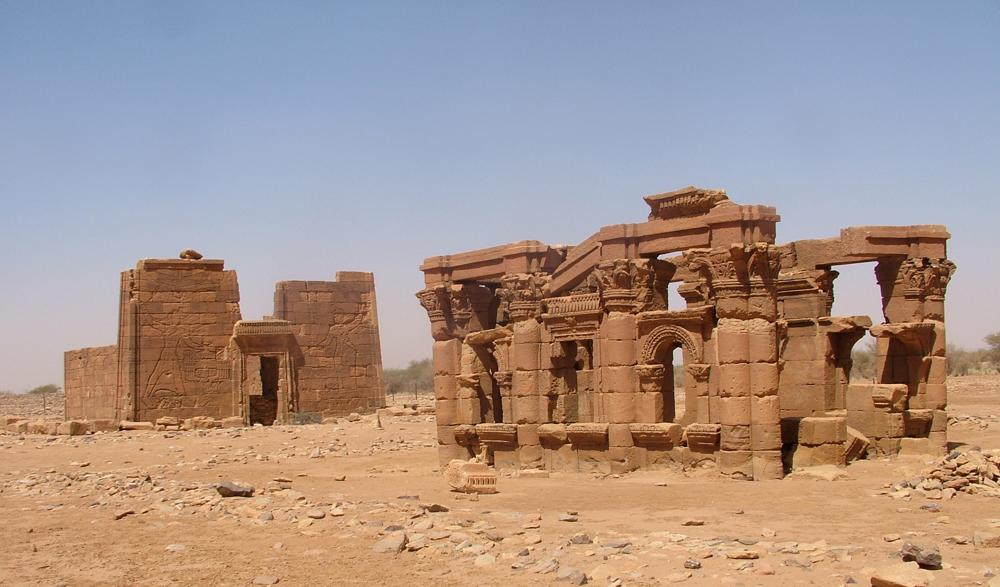
Tudor Revival
Time Period: Late 19th – early 20th century
Concept: Nostalgic recreation of English Tudor styles with medieval-inspired detailing.
Features: Half-timbered exteriors, steeply pitched roofs, prominent chimneys, and leaded windows.
Queen Anne
Time Period: 1870s–1910 (varies regionally)
Concept: A Victorian-era style that embraced variety and ornamentation to showcase wealth and creativity.
Features: Asymmetrical facades, turrets or towers, wraparound porches, spindle work, and abundant decorative trim.
Chicago School
Time Period: Late 19th – early 20th century
Concept: Early skyscraper style pioneering steel-frame construction and functional commercial design.
Features: Steel skeletons, large plate glass windows, minimal ornament, and emphasis on vertical lines.
Gothic
Time Period: 12th–16th century
Concept: Intended to evoke awe through soaring spaces and elaborate decorative elements in churches and cathedrals.
Features: Pointed arches, flying buttresses, ribbed vaults, and stained glass windows.
International
Time Period: 1920s–present
Concept: A universal, functional style rejecting ornamentation in favor of simplicity and modern materials.
Features: Steel and glass exteriors, open floor plans, flat roofs, and minimal decorative elements.
Beaux-Arts
Time Period: Late 19th – early 20th century
Concept: A grand, academic style blending Renaissance and Baroque influences with an emphasis on symmetry and grandeur.
Features: Monumental stairways, classical details, domes, sculptural ornamentation, and richly decorated interiors.